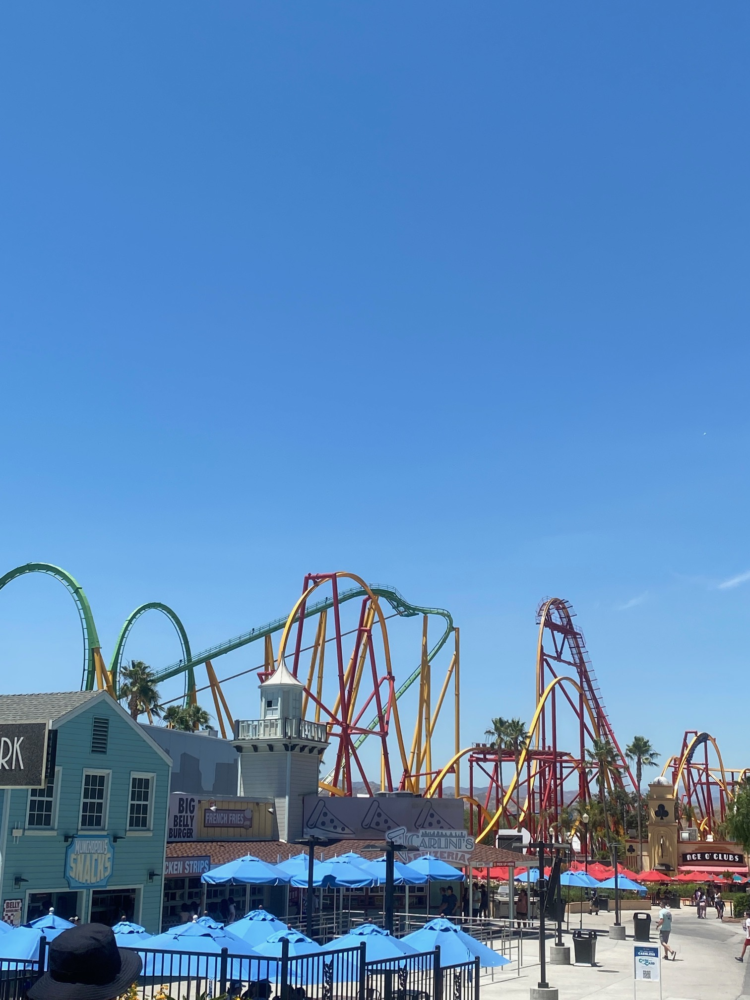

Today was Six Flags, but half of it was shut!
Opening time at Six Flags is a very tardy 10:30. We had done virtually no research so we’re going with the flow, i.e. being a bit amateurish. We have 3 days booked so today was to get our bearings.
The crowd at the entrance felt like Thorpe Park, but much hotter. The staff skills felt like Blackpool Pleasure Beach. We found a gentle coaster to ease us in. The queue looked short and the screen said 5 minutes. A sweaty hour later we got on. They had only one train running, with slow manual loading and no sense of rushing. The ride felt like an old Blackpool ride, with nasty friction brakes.
It felt hot, so we joined the queue for the Rapids. The screens around the park, the front screen of the app and the ride screen in the app all had different quoted queue times. Then there was a tannoy announcement of a different time again. Thank goodness we were in the shade. Did I mention that it was hot?
The ride signage and staff warned us we would get wet and may get soaked. Actually, we all got drenched. We shared with some very well behaved teenagers, who also got drenched. Much guffawing when other people got wet. Pleasantly cooling when it was your turn.
Quite a lot of rides were on 1 carriage or closed for refurbishment. Feels like they’re trying to keep costs down, which is a slippery slope for a theme park. We walked past some closed rides and closed restaurants, but found a chicken place, which had excellent food and was reasonably priced once we knocked off our annual pass discount. Me and Jake had a waffle chicken burger, which used waffles instead of bread buns. And maple syrup instead of ketchup. Very weird.
The only open ride near the chicken food closed because it broke. So we walked (slowly and moistly) deeper into the park. We found a runaway mine train, which had a terribly-managed queue but the ride itself was ok.
We explored some more closed rides and some half-open ones. The 2 screens of the app and the screens around the park felt like a roulette wheel for queue times (Vegas is next week!) and the temperature in the shade was 36C.
We walked along a line of amusement games like throwing a basketball in a hoop or knocking over 3 blocks. The area was dead and as we walked past each one, the vendors turned on their mics, one by one, to encourage us to play. It felt like a scene from Scooby Doo, it was so much like a ghost town.

We had some lovely Dipping Dots ice cream on the way out. More good food.
In summary, the park was so quiet that there wasn’t an atmosphere, lots of the rides were closed and those that were open had long queues. Three average rides in four hours but the heat broke us.
Back to the ranch via a supermarket top-up, we literally chilled in our aircon. The kids went back in the pool while me and Alison read and fought to keep our eyes open. Some of us were close to going to sleep around 8:30, so I decided it was hot tub and Smirnoff Ice o’clock. Alison joined me but the kids are broken.
We have a lie-in ready for a night show tomorrow. We will appreciate the slick efficiency of Disney all the more relative to today.